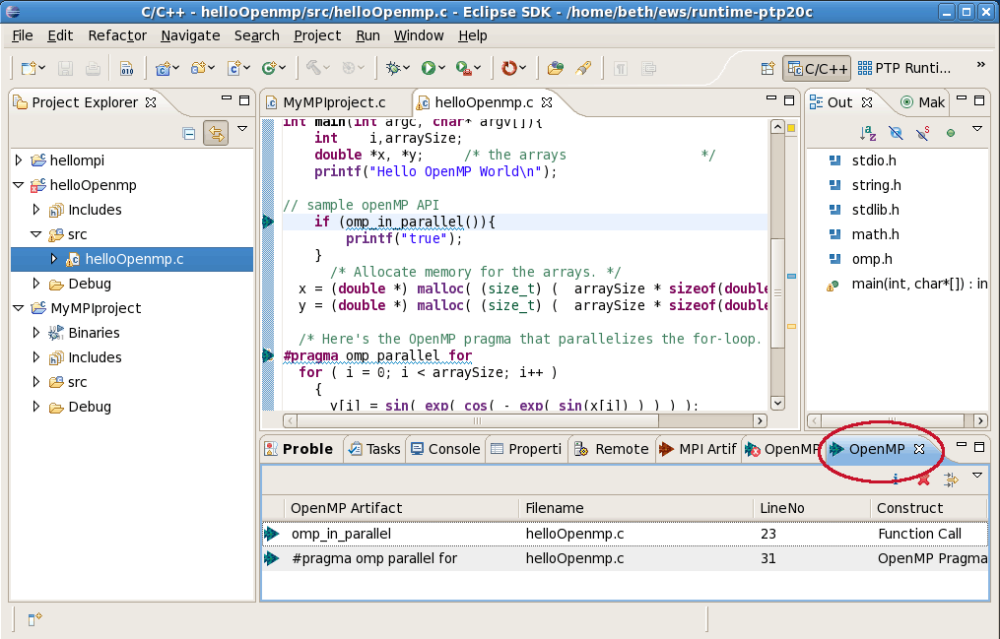

The basic instructions for running the OpenMP tools (finding OpenMP artifacts, navigating to source code, using Help) are the same as for running the MPI tools..
Finding OpenMP artifacts:
OpenMP artifacts found and shown in the OpenMP Artifact View:

There are a few extra OpenMP analysis functions beyond those available for MPI, too.